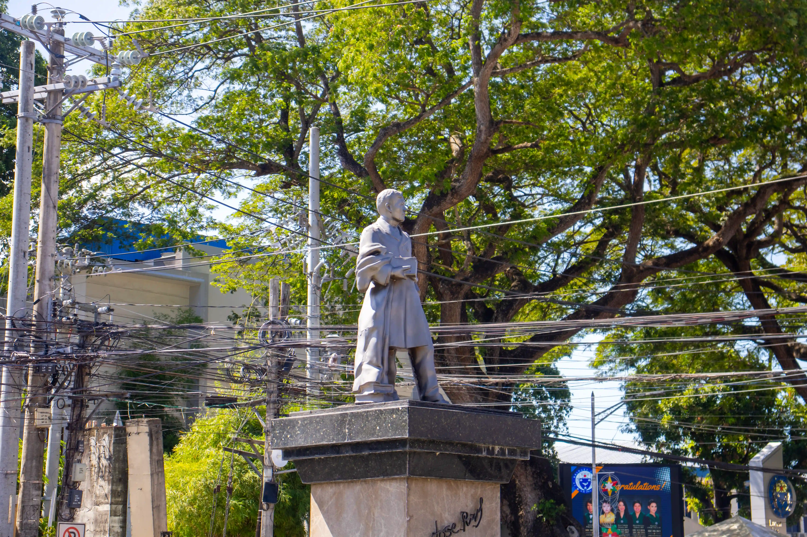
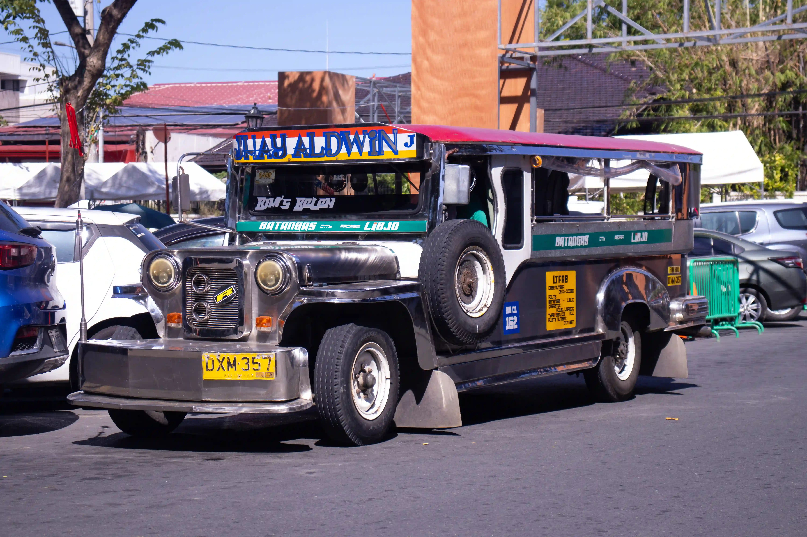
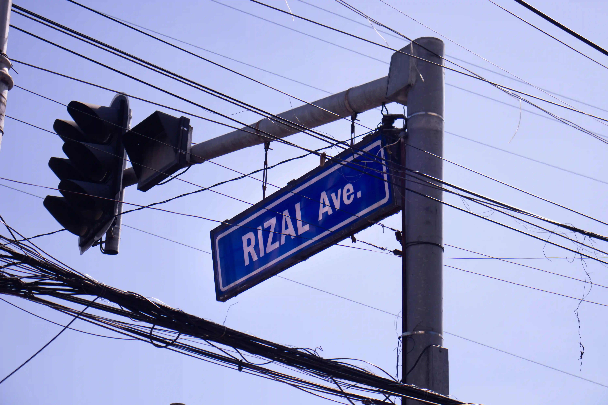
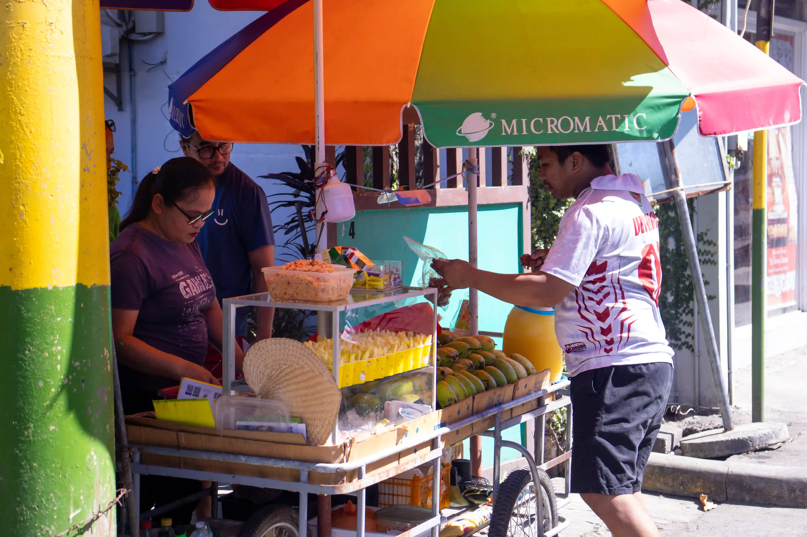
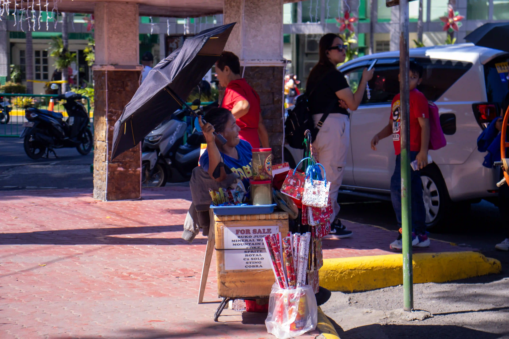
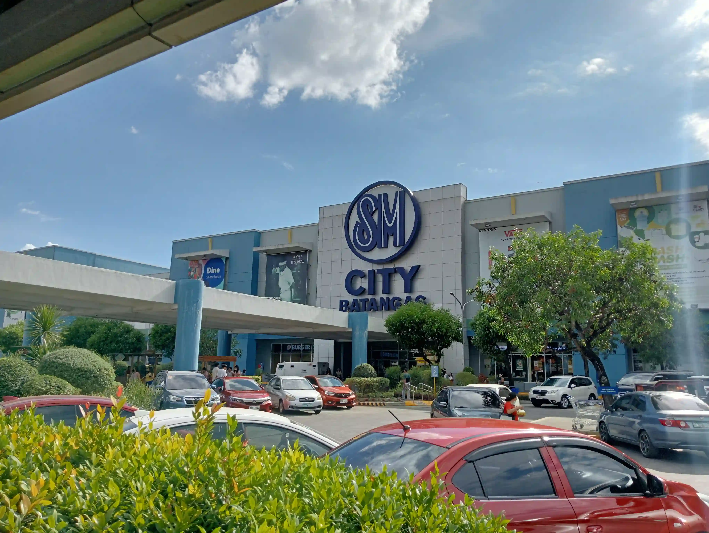
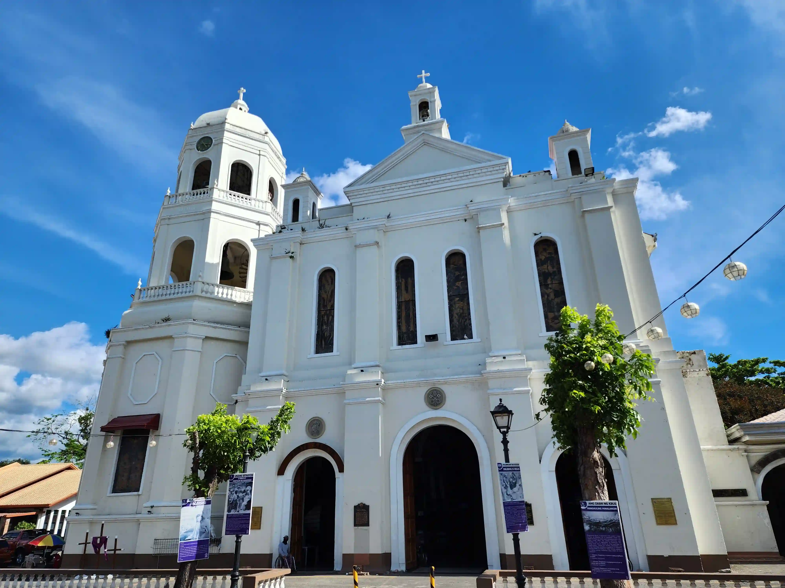
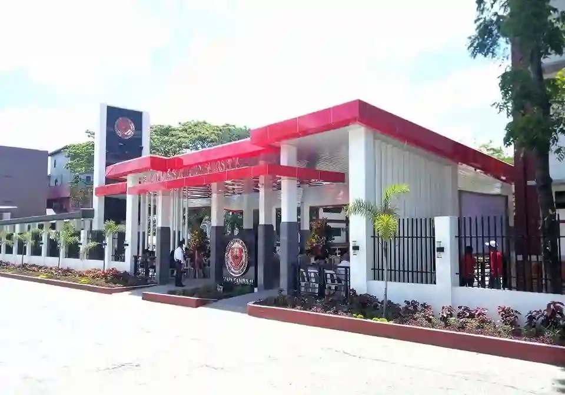
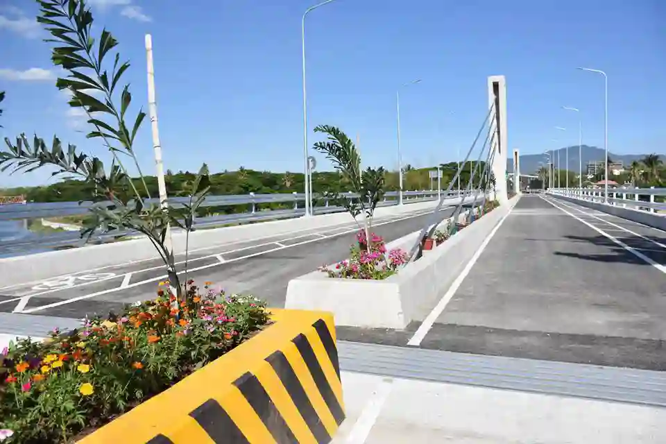
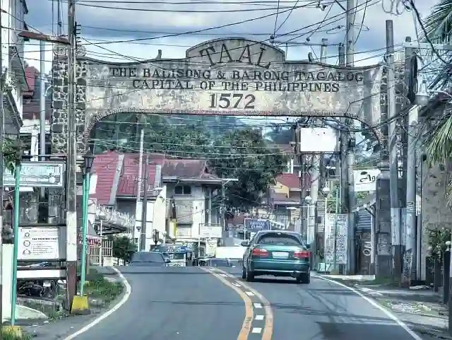

Explore our collection of photographs captured in Batangas, showcasing its beautiful places, landmarks, and everyday scenery. Each picture captures a unique moment and highlights the beauty of our local surroundings.

The statue of Dr. Jose Rizal standing proudly among tall trees in Batangas City.

A classic stainless steel jeepney on the Batangas City - Libjo route, parked under the sun.

The blue Rizal Avenue street sign hanging under a traffic light in Batangas City.

A street vendor in Batangas City selling fresh mangoes and snacks under a colorful umbrella.

An elderly vendor in Batangas City holding a black umbrella while selling buko juice, soft drinks, and gift wrappers from her small wooden stall on the sidewalk.

The front view of SM City Batangas, with its big blue logo, parked cars, and green trees under a bright blue sky.
- SM City Batangas

The white facade of the Batangas Basilica, with its tall bell tower, arched doors, and stained glass windows against a clear blue sky.
- Batangas Basilica

The red and white entrance gate of Batangas State University, with students and visitors walking near the main campus.
- Batangas State Univercity
A long, clean bridge in Batangas City with white lamp posts, colorful flowers on the side, and mountains in the distance under a clear blue sky.
- Bridge of Progress

The old stone arch welcoming visitors to Taal, Batangas, known as the Balisong and Barong Tagalog Capital of the Philippines since 1572.
- Taal Welcome Arch